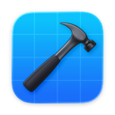
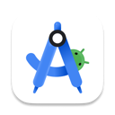
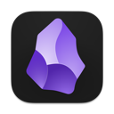

Always Art
Developed iOS and Android apps from scratch for users to explore art galleries, plan fair visits, and manage their collections. Private by default. Built for continuity. Designed to support how art actually lives over time.
I'm in my fourth year studying Software Engineering (B.Eng, Co-op) at McGill University in Montreal. Outside of academics and software, I spend my time running, skateboarding, and reading old science fiction novels. I also listen to a lot of 80s synth pop and am always looking for new music suggestions.
Previously at Phillips Exeter Academy.

Xcode
Android Studio
ObsidianDeveloped iOS and Android apps from scratch for users to explore art galleries, plan fair visits, and manage their collections. Private by default. Built for continuity. Designed to support how art actually lives over time.
★ 2025 Maine Governor's Award
Native iOS and Android applications to provide special winter deals and activities for kids in Maine, New Hampshire, and Michigan.
★ 3rd at Launch Canada 2025
Lead the flight computer software project for a year. Built embedded C and C++ code targetting a STM32 processor.
Skate tracking and management app, built with Swift and SwiftUI from the ground up. Featured in 9to5Mac and a 4.9 star app store rating.
Implementation of Grover's algorithm, which finds an entry in an unsorted list in roughly the square root of the number of entries.
Sync tasks to OmniFocus.
Pomodoro timer for the Microbit.
Starter project for writing embedded Rust on the Microbit v2.
Java based compiler for the C language, from COMP520: Compiler Design. Compiles a subset of C for the MIPS architecture.
★ Best class project
Group project for ECSE223: Model Based Programming.
Final project for ECSE316, a simple learning website for others to see how noise cancelling algorithms work.
Currently learning my way into hardware — projects to come.
★ Shannon Nissa Bailey Powers Meditations Book
Published at Phillips Exeter Academy, my seminal personal essay. Selected from over 300 applications to read aloud at the academy.
Exploration of the Bessel function during my differential equations class at McGill.